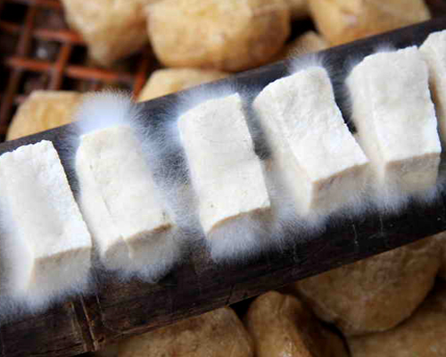

毛豆腐
毛豆腐是徽州传统美食，豆腐表面长有白色菌丝，口感独特，既有豆腐的嫩滑，又有菌类的鲜美。 通过特殊发酵工艺制成的毛豆腐，煎炸后外皮金黄酥脆，内里柔软细腻，配以特制酱料，是徽菜中极具地方特色的菜品。
外酥里嫩
咸鲜微辣
菌香浓郁
口感独特
5-7
发酵时间(天)
15
烹饪时间(分钟)
2-3
份量(人)
独特发酵工艺
毛豆腐的制作关键在于发酵过程。将新鲜豆腐切成小块，放置在竹匾上，在适宜的温度(15-25°C)和湿度条件下自然发酵5-7天。豆腐表面会生长出白色绒毛状菌丝，这些菌丝主要是毛霉，它们分解豆腐中的蛋白质，产生特殊的鲜味和口感。
主要食材
- 徽州毛豆腐 400克
- 辣椒酱 2汤匙
- 葱花 2汤匙
- 香菜 适量
- 酱油 1汤匙
- 香油 1茶匙
- 蒜末 1汤匙
- 食用油 适量
- 盐 少许
- 白糖 1茶匙
营养成分（每100克）
- 热量：120千卡
- 蛋白质：8.5克
- 脂肪：6.8克
- 碳水化合物：4.2克
- 纤维素：0.6克
- 钙：160毫克
- 钠：320毫克
详细做法步骤
- 将毛豆腐从容器中取出，用清水轻轻冲洗，去除表面多余菌丝，然后用厨房纸吸干水分。
- 将毛豆腐切成大小适中的块状，厚度约1.5厘米。
- 准备酱料：将辣椒酱、酱油、香油、蒜末、白糖和少许盐混合均匀，制成调味酱。
- 平底锅加热，倒入适量食用油，油温升至六成热时放入毛豆腐。
- 中小火煎至底面金黄酥脆，约3-4分钟，然后翻面煎另一面。
- 两面都煎至金黄色后，用筷子轻轻按压毛豆腐，使其内部受热均匀。
- 煎好的毛豆腐捞出，控油后摆盘。
- 将调好的酱料均匀淋在煎好的毛豆腐上。
- 撒上葱花和香菜点缀即可上桌。
- 喜欢更浓郁口味的可以额外准备一小碟酱料蘸食。
烹饪小贴士
- 选择发酵适中的毛豆腐，菌丝洁白均匀为佳
- 清洗毛豆腐时要轻柔，避免破坏豆腐形状
- 煎制前一定要吸干水分，防止油溅
- 火候要控制在中火，避免外糊里生
- 煎制时不要频繁翻动，待一面定型后再翻面
- 酱料可以根据个人口味调整辣度和咸度
- 正宗的徽州毛豆腐酱料会加入少许猪油增香
- 煎好的毛豆腐要趁热食用，口感最佳
历史与文化
毛豆腐是徽州地区历史悠久的传统食品，据说起源于明代。古时徽商外出经商，为了方便携带豆腐，发明了这种发酵方法。经过发酵的豆腐不仅保存时间更长，而且风味独特，逐渐成为徽州地区的特色美食。
在徽州，有"徽州第一怪，豆腐长毛上等菜"的说法，形象地描述了毛豆腐的特点。这道菜体现了徽州人因地制宜、巧妙利用自然资源的智慧，是徽州饮食文化的重要组成部分。